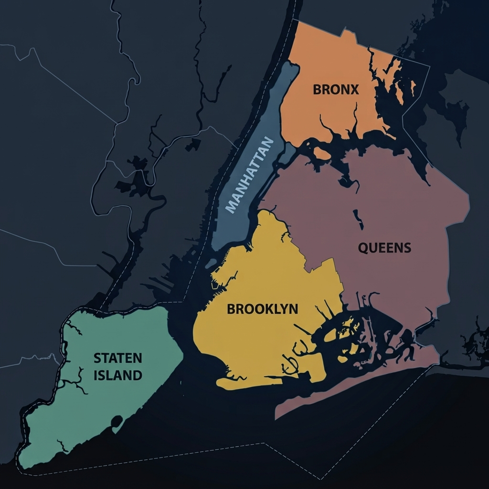
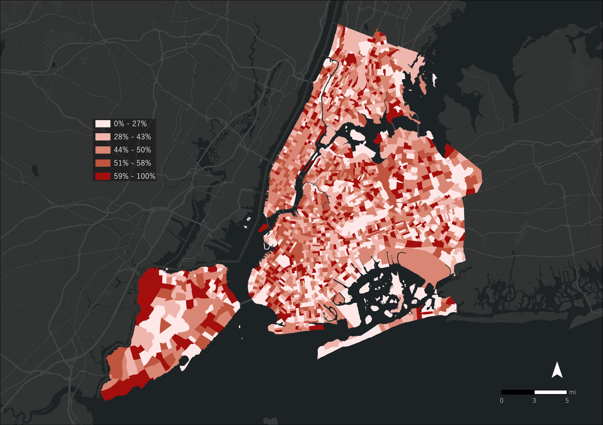
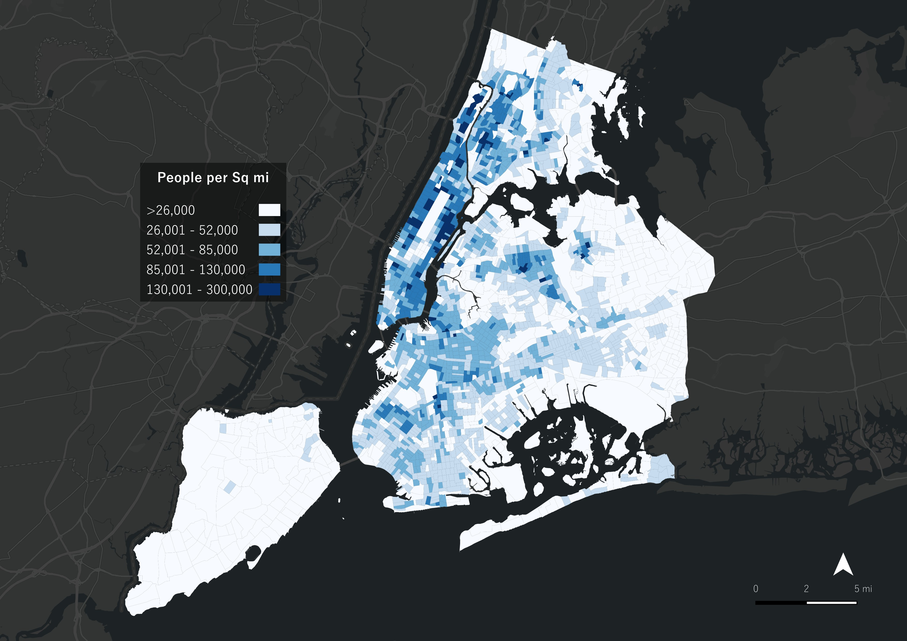
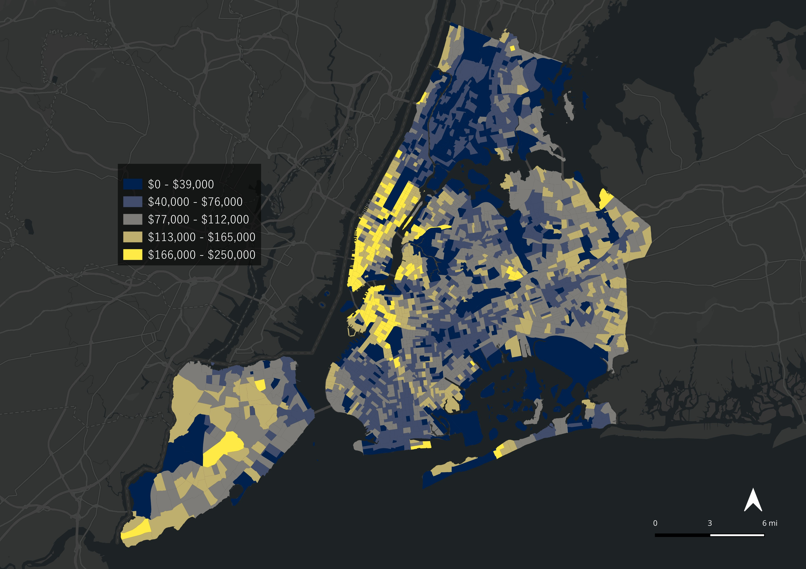

New York City within the United States of America
Our data is aggregated and interpreted at two scales; the census tract and larger boroughs which are composed of multiple census tracts.
Map of US
NYC can be categorized into five distinct boroughs

Borough Explorer
Select a borough for quick summary of our data exploration.
Manhattan
Extremely dense with the larger population residing in one of the smallest boroughs. Our data shows higher income households distributed densely across several many tracts within the borough, where there is also a moderate count of critical inspection results.
Percentage of Critical Inspection Result Count per Census Tract in New York City, 2024-2026
Staten Island has a problem?
The map visualizes critical 2024-2026 health inspection violations across New York City by census tract. The Darker crimson tones indicate tracts where higher percentage of recorded inspection results are flagged as critical hazards, deeming foods from these food retail places unsafe for consumption.Our results show Staten Island as the most frequent in receiving low letter grading; restaurants here, tend to perform quite poorly.

🔍 Click map to expand full screen
NYC Mean Inspection Score by Cuisine and Borough, 2024-2026

🔍 Click chart to expand full screen
Latin American restaurants in Staten Island are more likely to receive poor inspection grades
The chart organizes the data to present a varying difference between borough and cuisine when compared to recorded inspection results. Interestingly, Latin American restaurants in Staten Island perform worst while restaurants serving Italian food across all Boroughs, especially Bronx seemingly perform relatively well during official inspection visits.
Population Density & Wealth
Does wealth or population distribution play a role?
Population Density Across New York City per Census Tract in 2024

🔍 Click to enlarge
Boroughs; Manhattan, Bronx and Brooklyn are quite dense
This visualization maps population density across New York City revealing tracts within Manhattan, Bronx and Brooklyn as denser than Staten Island and Northern/Southern Eastern portions of Queens. For our research, this means Staten Island restaurants tend to be less busy than those denser areas such as Manhattan, Bronx and Brooklyn.
Median Household Income Across New York City per Census Tract in 2024

🔍 Click to enlarge
Staten Island, Manhattan, and fragments of Queens show dense distribution of higher income households
This map shows the distribution of median household income across NYC’s five boroughs.Staten Island, Manhattan, and parts of Queens display a higher median household income, this highlights an uneven distribution of wealth across the city. In contrast, Bronx and southern Queens have a higher concentration of low-income households. These patterns show the socioeconomic disparities between different areas of NYC. These differences provide an important context for comparing whether variations in restaurant inspections results are associated with the median household income of the boroughs in which the restaurants operate in.
Conclusion
Our data exploration highlights Staten Island as performing significantly worse in restaurant food inspections especially places serving Latin American cuisine.This is interesting as the borough is lowest in density and wealth seems to play no significant role. However, despite all this we want our analysis to encourage the consumer to check official health & food inspection results on the NYC ABCEats site and familiarize themselves with the New York letter grading system; rather simply trusting social media. It is important to note influencers may not understand or recognize what goes on beyond the counter, but official health inspectors do. The US Healthcare system is costly and many may choose to avoid visiting to save on the possibility of a considerably large bill at the expense of their health. When restaurants are often operating under insanitary conditions in lower income neighbourhoods such as those infrequent tracts within Staten Island, all of Bronx and Southern Queens; an invisible type of injustice is produced where such populations are more likely to fall sick and question themselves on whether they should spend a significant amount on healthcare.This is especially dangerous for those more vulnerable including young children, pregnant women, the elderly and those with a weaker immune system.